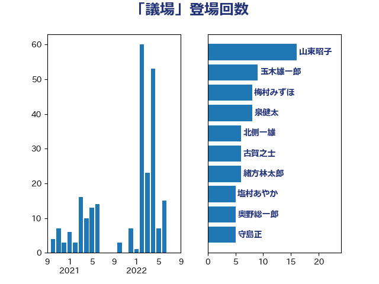

単語「議場」

| 山東昭子 | 自由民主党 | 16 回 |
| 玉木雄一郎 | 国民民主党 | 9 回 |
| 梅村みずほ | 日本維新の会 | 8 回 |
| 泉健太 | 立憲民主党 | 8 回 |
| 北側一雄 | 公明党 | 6 回 |
| 古賀之士 | 立憲民主党 | 6 回 |
| 緒方林太郎 | 無所属 | 6 回 |
| 塩村あやか | 立憲民主党 | 5 回 |
| 奥野総一郎 | 立憲民主党 | 5 回 |
| 守島正 | 日本維新の会 | 5 回 |
| 小西洋之 | 立憲民主党 | 5 回 |
| 平木大作 | 公明党 | 5 回 |
| 新藤義孝 | 自由民主党 | 5 回 |
| 中野洋昌 | 公明党 | 4 回 |
| 吉田はるみ | 立憲民主党 | 4 回 |
| 細田博之 | 自由民主党 | 4 回 |
| 赤嶺政賢 | 日本共産党 | 4 回 |
| 中谷一馬 | 立憲民主党 | 3 回 |
| 北神圭朗 | 無所属 | 3 回 |
| 山田賢司 | 自由民主党 | 3 回 |
| 舞立昇治 | 自由民主党 | 3 回 |
| 馬場伸幸 | 日本維新の会 | 3 回 |
| 伊藤孝恵 | 国民民主党 | 2 回 |
| 枝野幸男 | 立憲民主党 | 2 回 |
| 柴田巧 | 日本維新の会 | 2 回 |
| 水岡俊一 | 立憲民主党 | 2 回 |
| 浅川義治 | 日本維新の会 | 2 回 |
| 海江田万里 | 立憲民主党 | 2 回 |
| 長浜博行 | 無所属 | 2 回 |
| 三木圭恵 | 日本維新の会 | 1 回 |
| 世耕弘成 | 自由民主党 | 1 回 |
| 伊佐進一 | 公明党 | 1 回 |
| 住吉寛紀 | 日本維新の会 | 1 回 |
| 吉川沙織 | 立憲民主党 | 1 回 |
| 國重徹 | 公明党 | 1 回 |
| 大塚耕平 | 国民民主党 | 1 回 |
| 太栄志 | 立憲民主党 | 1 回 |
| 小渕優子 | 自由民主党 | 1 回 |
| 小野泰輔 | 日本維新の会 | 1 回 |
| 山下芳生 | 日本共産党 | 1 回 |
| 山下貴司 | 自由民主党 | 1 回 |
| 山岸一生 | 立憲民主党 | 1 回 |
| 山添拓 | 日本共産党 | 1 回 |
| 岡本あき子 | 立憲民主党 | 1 回 |
| 工藤彰三 | 自由民主党 | 1 回 |
| 平井卓也 | 自由民主党 | 1 回 |
| 柳ヶ瀬裕文 | 日本維新の会 | 1 回 |
| 浅田均 | 日本維新の会 | 1 回 |
| 渡辺猛之 | 自由民主党 | 1 回 |
| 熊田裕通 | 自由民主党 | 1 回 |
| 熊谷裕人 | 立憲民主党 | 1 回 |
| 牧原秀樹 | 自由民主党 | 1 回 |
| 田村まみ | 国民民主党 | 1 回 |
| 石橋通宏 | 立憲民主党 | 1 回 |
| 神谷裕 | 立憲民主党 | 1 回 |
| 羽田次郎 | 立憲民主党 | 1 回 |
| 荒井優 | 立憲民主党 | 1 回 |
| 西田昌司 | 自由民主党 | 1 回 |
| 足立康史 | 日本維新の会 | 1 回 |
| 辻元清美 | 立憲民主党 | 1 回 |
| 重徳和彦 | 立憲民主党 | 1 回 |
| 鈴木敦 | 国民民主党 | 1 回 |
| 長妻昭 | 立憲民主党 | 1 回 |
| 馬淵澄夫 | 立憲民主党 | 1 回 |
| 高橋英明 | 日本維新の会 | 1 回 |